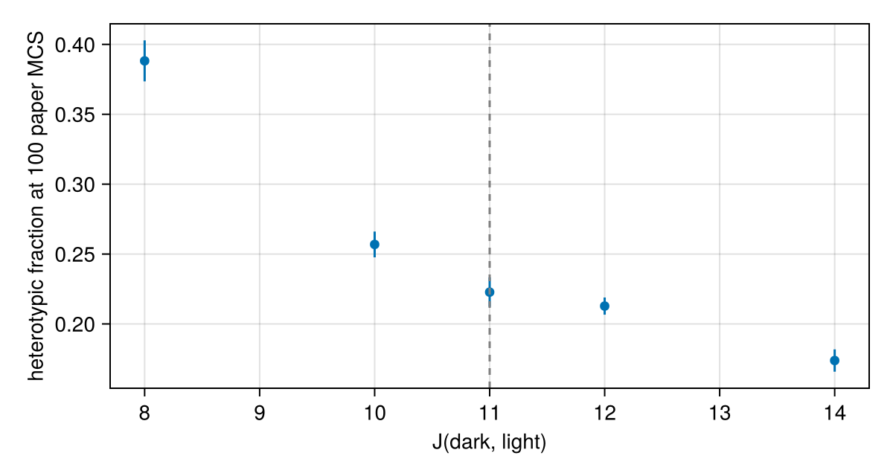

Tutorial 7: parameter scans with remake and ensembles
A single run of a stochastic model is one sample. To learn how a model depends on a parameter you run many replicates at many values. You will learn:
- how
remakechanges parameters, the initial state, the seed and the time span without recompiling; - how to run replicates with
EnsembleProblem; - how to scan a parameter inside one ensemble with
prob_func, and summarise the results.
We scan the Graner & Glazier (1992) sorting model, the shipped GranerGlazier with the paper's parameters and initial aggregate. Only the run length is reduced (paper: up to 10⁴ of its MCS; here: 100 of its MCS, which is 1600 of ours).
using Potts, PottsModels, CairoMakie
using Statistics: mean, std
σ0, kinds0 = graner_glazier_state()
@named gg = GranerGlazier(; lattice = size(σ0))
prob = PottsProblem(gg, [ownership => σ0, kind => kinds0], (0, 1600); seed = 1)A measure of sorting
The fraction of dark–light contacts among all contacts between different cells falls as the cells sort. It is a plain function of a saved state (the lattice is periodic, so neighbours wrap around):
function heterotypic_fraction(u)
σ, k = u.σ, u.cell.kind
mixed = total = 0
for x in CartesianIndices(σ), step in ((1, 0), (0, 1), (1, 1), (1, -1))
y = CartesianIndex(mod1.(Tuple(x) .+ step, size(σ)))
a, b = σ[x], σ[y]
(a == b || a == 0 || b == 0) && continue
total += 1
mixed += k[a] != k[b]
end
return mixed / total
end
heterotypic_fraction(prob.u0)0.47443762781186094remake
remake returns a new problem with some parts changed. Changing parameters, the initial state, the seed or the time span never regenerates code, so it is cheap:
hot = remake(prob; p = [:T => 20.0]) # parameters, by name
other = remake(prob; seed = 2) # another random stream
short = remake(prob; tspan = (0, 160)) # another time span
hot.f === prob.f # the same compiled functionstrueA plain loop is a scan:
Js = [8.0, 10.0, 11.0, 12.0, 14.0] # the dark–light energy; the paper's value is 11
function with_Jdl(prob, Jdl)
J = [0 16 16; 16 2 Jdl; 16 Jdl 14]
return remake(prob; p = [:J => J])
end
one_run = [heterotypic_fraction(solve(with_Jdl(prob, J), SequentialCPM()).u[end]) for J in Js]5-element Vector{Float64}:
0.3945139169019766
0.309051724137931
0.26837463250734983
0.17732558139534885
0.21437578814627994Replicates with an ensemble
EnsembleProblem runs trajectories copies of a problem. Each copy gets its own random stream (its replica number), so the copies are independent, and each is reproducible on its own. output_func reduces each solution to what you need, so the ensemble does not keep every saved state:
ens = EnsembleProblem(prob; output_func = (sol, i) -> (heterotypic_fraction(sol.u[end]), false))
results = solve(ens, SequentialCPM(); trajectories = 4)
results.u4-element Vector{Float64}:
0.21801514547628537
0.24547697368421054
0.21847739888977002
0.23809523809523808A scan in one ensemble
prob_func builds the problem of each trajectory. Its second argument carries the trajectory number sim_id; here trajectory i gets the J value Js[mod1(i, 5)], so 15 trajectories are 3 replicates of each value. The ensemble still gives every trajectory its own random stream:
reps = 3
scan = EnsembleProblem(prob;
prob_func = (p, ctx) -> with_Jdl(p, Js[mod1(ctx.sim_id, length(Js))]),
output_func = (sol, i) -> (heterotypic_fraction(sol.u[end]), false))
res = solve(scan, SequentialCPM(); trajectories = reps * length(Js))
F = reshape(res.u, length(Js), reps) # rows: J values, columns: replicates
fig = Figure(size = (600, 320))
ax = Axis(fig[1, 1]; xlabel = "J(dark, light)", ylabel = "heterotypic fraction at 100 paper MCS")
errorbars!(ax, Js, vec(mean(F; dims = 2)), vec(std(F; dims = 2)))
scatter!(ax, Js, vec(mean(F; dims = 2)))
vlines!(ax, 11; color = :gray, linestyle = :dash)
fig
Below the neutral value $J_{dl} = (J_{dd} + J_{ll})/2 = 8$ mixing is favoured; above it the higher the dark–light energy, the faster the aggregate sorts. The dashed line is the paper's value.
On the CPU an ensemble runs its trajectories on all of Julia's threads. Start Julia with julia --threads=auto to use every core; solve(ens, SequentialCPM(), EnsembleSerial(); trajectories = n) runs them one after another.
Changing the model's structure (a new term, another lattice size) needs a new model. Changing the solvers of fields and ODEs (field_solver, ode_solver, solvers) with remake regenerates the code, which takes about a second.
What you learned
remake(prob; p, u0, seed, tspan)changes a problem without recompiling.EnsembleProblemruns independent, reproducible replicates;output_funckeeps what you need.prob_funcwithctx.sim_idturns one ensemble into a parameter scan.
The full run of the sorting model, as long as in the paper:
See also: the paper page of GranerGlazier, which builds this model and compares it with the paper.
Next, Tutorial 8 runs models on a GPU.